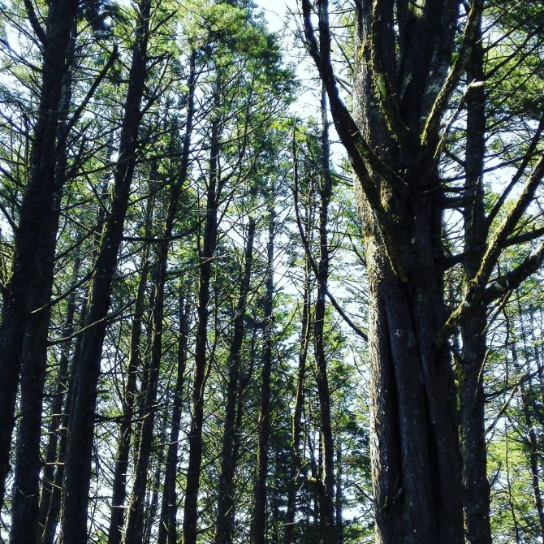
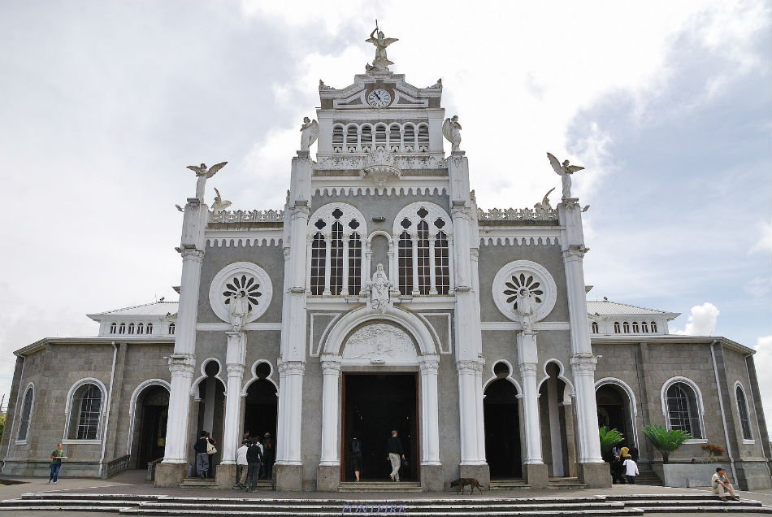
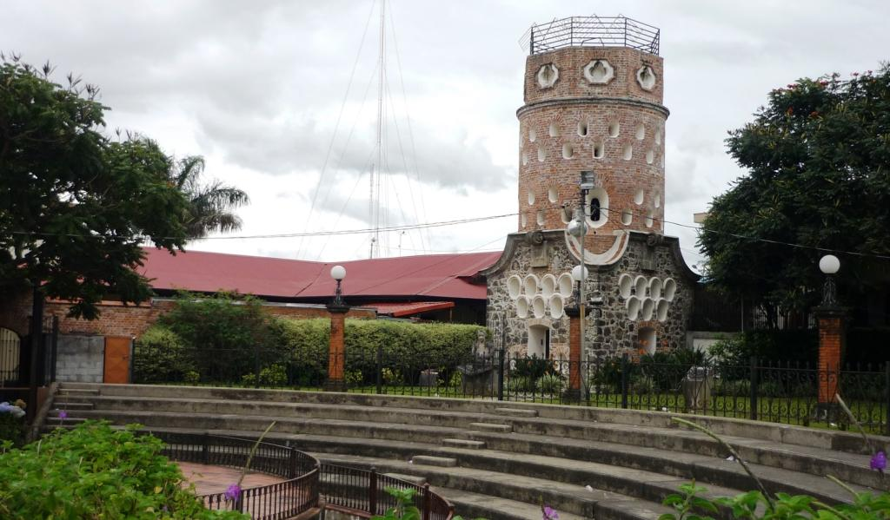
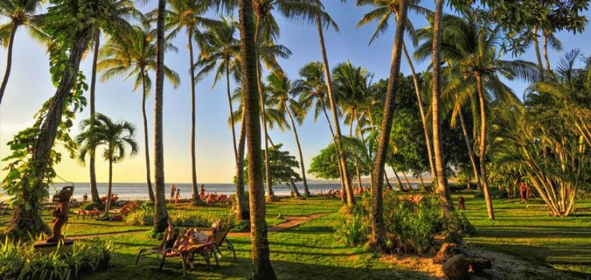
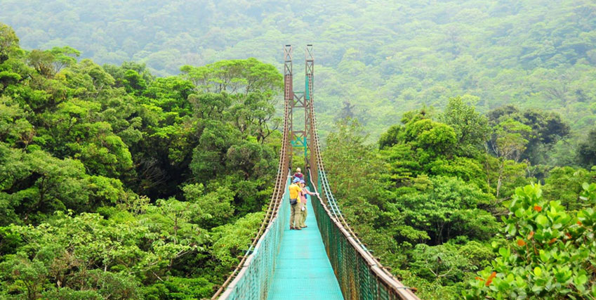
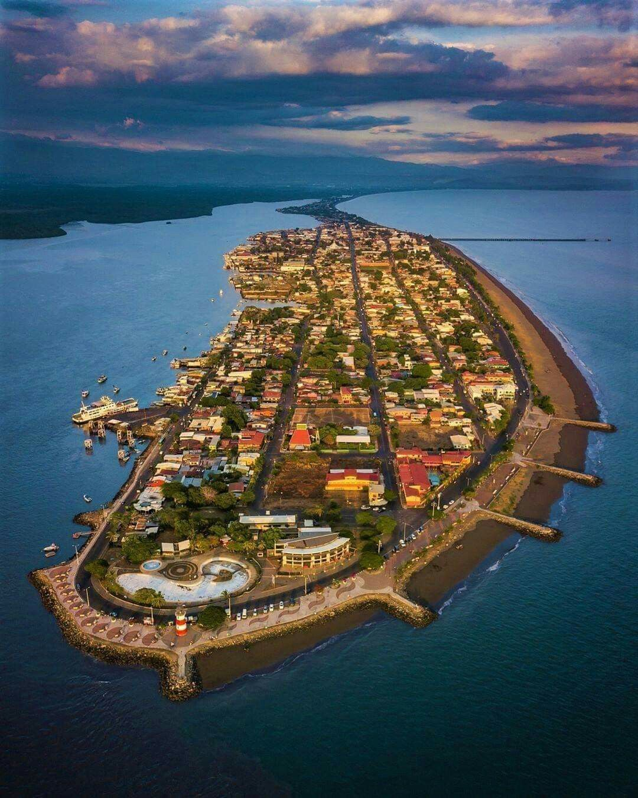
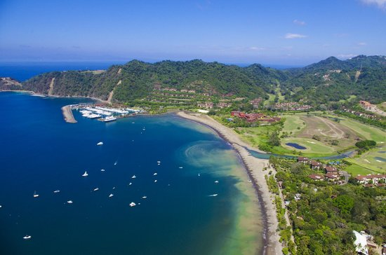
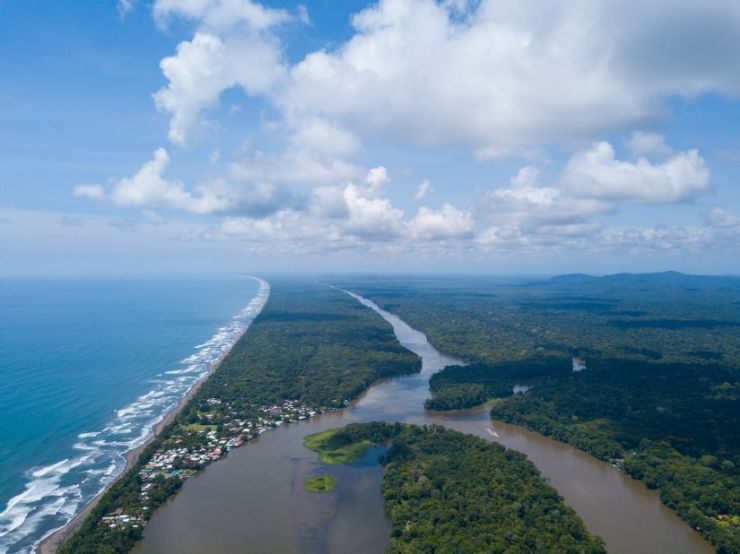
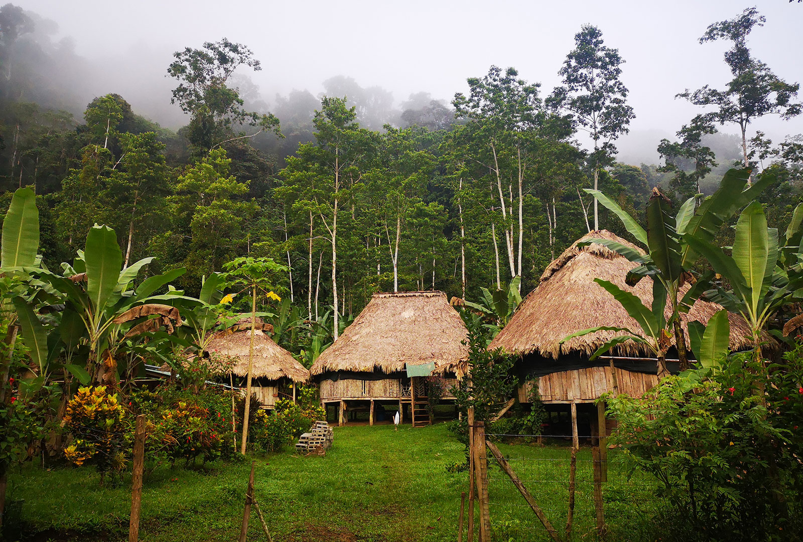

Escoja una opción para descubir una provincia
Entre los mejores destinos turisticos de San José hemos elegido 5:
- Teatro Nacional

- Museo Nacional

- Museo de Oro Precolombino

- Museo del Jade
- Parque La Sabana
- Volcán Poas

- Fraijanes

- Volcán Arenal

- La Fortuna

- Rio Celeste

- La Basilica de los Ángeles

- Las Ruinas de Ujarrás

- El Fortín

- La Catarata de la Paz

- Playa Tamarindo

- Monteverde

- Puntarenas

- Playa Herradura

- Parque Nacional Tortuguero

- Talamanca

© 2020 HARRISON RODRÍGUEZ WEBPAGES COSTA RICA